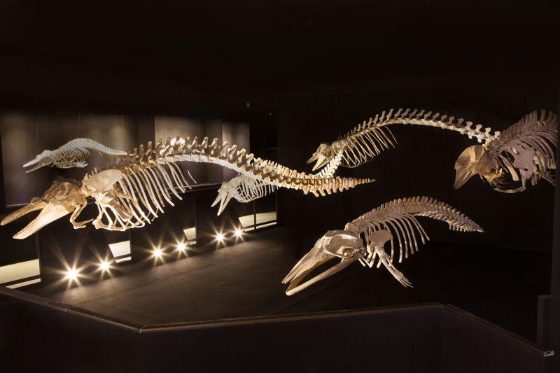

Balneário Piçarras é uma encantadora cidade localizada no litoral norte do estado de Santa Catarina, Brasil. Conhecida por suas belezas naturais e por ser um destino turístico altamente popular, especialmente durante o verão, a cidade oferece uma mistura perfeita de tranquilidade e entretenimento. Com suas praias extensas, águas cristalinas e uma população amigável, Balneário Piçarras é um refúgio ideal tanto para quem busca descanso quanto para os amantes da aventura.
1 - Praias: A principal atração de Balneário Piçarras são suas deslumbrantes praias, que se destacam pela beleza natural e pelas condições ideais para banhos e esportes aquáticos. A Praia de Piçarras, a mais famosa da região, se estende por vários quilômetros com sua areia fina e dourada. O mar calmo e cristalino é perfeito para famílias, praticantes de esportes náuticos e todos aqueles que desejam relaxar à beira-mar. A infraestrutura da praia é bem desenvolvida, com quiosques que oferecem uma variedade de alimentos e bebidas, além de áreas de lazer e entretenimento. Outras praias menores e mais tranquilas, como a Praia das Palmeiras, oferecem um ambiente mais reservado, ideal para quem procura um pouco mais de paz e sossego.
2 - Ilha Feia: A Ilha Feia, apesar de seu nome curioso, é uma das joias escondidas de Balneário Piçarras. Localizada a uma curta distância da costa, esta pequena ilha é um local privilegiado para passeios de barco e mergulho. A ilha é conhecida por sua rica biodiversidade marinha e por ser um ponto de preservação ambiental. Os visitantes podem explorar suas águas ao redor e observar uma variedade de espécies marinhas em seu habitat natural, tornando-se uma experiência imperdível para os amantes da natureza e do ecoturismo.
3 - Museu Oceanográfico Univali: O Museu Oceanográfico Univali é uma das principais atrações culturais de Balneário Piçarras. Localizado em um prédio moderno e bem equipado, o museu abriga uma vasta coleção de espécies marinhas, fósseis e itens relacionados à vida no oceano. As exposições são detalhadas e educativas, proporcionando aos visitantes uma compreensão profunda da fauna e flora marinha local. O museu oferece atividades interativas e programas educativos que são atraentes tanto para crianças quanto para adultos, tornando-o um ótimo destino para famílias e grupos escolares.
4 - Parque Beto Carrero World:Localizado na cidade vizinha de Penha, o Beto Carrero World é o maior parque temático da América Latina e um destino indispensável para quem visita Balneário Piçarras. Com uma vasta gama de atrações, que incluem montanhas-russas emocionantes, shows ao vivo e áreas temáticas, o parque é uma excelente opção de lazer para todas as idades. A proximidade com Balneário Piçarras torna a visita ao parque conveniente para quem está hospedado na cidade, e muitos turistas optam por se basear em Balneário Piçarras para explorar o parque.
5 - Passeios de Barco:Os passeios de barco em Balneário Piçarras são uma maneira fantástica de explorar a costa e descobrir a beleza natural da região. Com opções que variam desde passeios tranquilos ao longo da costa até aventuras de pesca esportiva, há algo para todos os gostos. Os barcos oferecem vistas deslumbrantes das praias, das ilhas e da vida marinha, proporcionando uma experiência relaxante e emocionante ao mesmo tempo. Os passeios são uma excelente forma de aproveitar a paisagem e explorar as águas cristalinas que cercam a cidade.